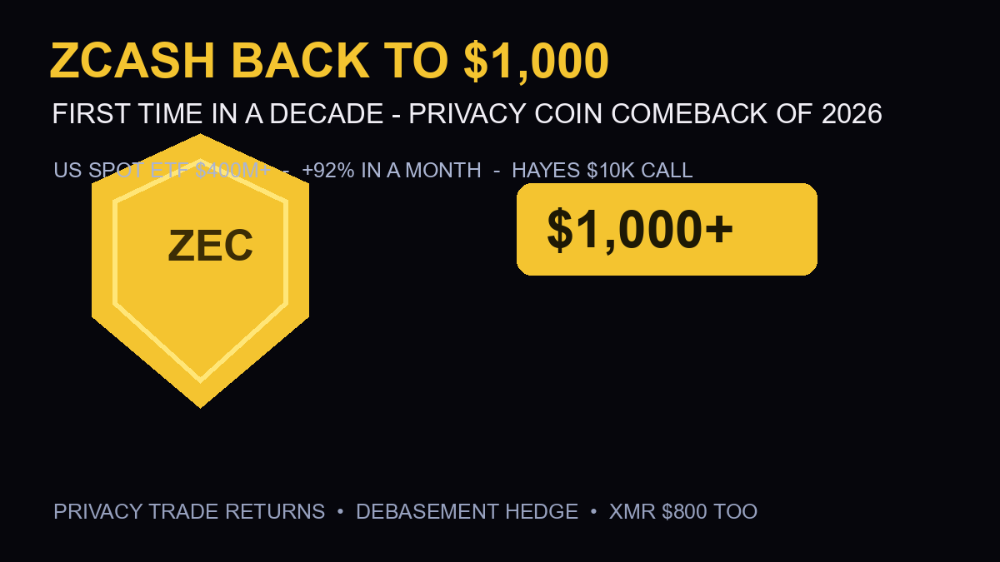

Zcash Hits $1,000 for the First Time in a Decade: The Privacy Coin Comeback Nobody Priced

The privacy coin everyone wrote off just became 2026’s best comeback story. Zcash crossed $1,000 on September 4 — its first four-figure print in roughly a decade — pushing its market value to about $17 billion (BeInCrypto). The catalyst stack: a US spot ETF past $400 million in assets, a +92% monthly run, and Arthur Hayes publicly calling for $10,000. While Bitcoin and Ethereum chopped after Warsh’s hawkish keynote, ZEC kept climbing. The market is suddenly paying for privacy again.
The Quick Answer
- ZEC price: crossed $1,000 on September 4 — first time since 2016 (BeInCrypto); new all-time high territory per social trackers
- ETF milestone: the US spot Zcash ETF crossed $400M in assets during the breakout (Cryptorank) — the only major privacy coin with a US spot ETF wrapper (CoinMarketCap)
- Momentum: +92% in a month, and +7.93% on the ETF-launch day itself (CoinMarketCap)
- The loud call: Arthur Hayes’ $10,000 target sent ZEC up 30% in 24 hours when he made it (Facebook/NFT World syndication)
- Company: Monero closed in on a record above $800 — privacy isn’t a ZEC story, it’s a sector story (Yahoo Finance)
Why the Privacy Trade Returned — Right Now
The timing isn’t random. Three macro currents converged:
1. The debasement trade broadened. The Block notes Bitcoin and gold are moving in lockstep as the debasement trade gains steam — and privacy coins are the speculative edge of that same thesis. When investors flee fiat printing, they buy Bitcoin first, gold second… and eventually the assets that hide from surveillance entirely.
2. Regulatory clarity cut both ways. The CLARITY Act’s stall showed Congress can’t even pass the friendly stuff — so the feared “privacy coin ban” never materialized. Meanwhile, the SEC let a spot ZEC ETF operate and grow past $400M. The market read: privacy coins survived the regulatory purge.
3. Institutional wrappers normalize what exchanges de-risked. For years, ZEC carried delisting stigma. A Grayscale-to-spot-ETF conversion (reported when ZEC crossed $800 in August, per U.Today) gave the asset the institutional wrapper that resets its reputational discount. Scarcity + legitimacy + a tight float = the squeeze mechanics that took ZEC from $500 to $1,000 in weeks.
The Paradox Investors Should Understand
Here’s the uncomfortable part: ZEC’s rally is institutional, but privacy coins are anti-institutional by design. The ETF wrapper that legitimized ZEC also makes it more surveillable — ETF flows are public, on-chain shielded adoption is the actual privacy metric, and per bitcoinfoundation’s analysis, shielded adoption is genuinely rising. The bullish case rests on both: ETF money for the price, shielded usage for the story. If either leg breaks, the trade gets crowded fast — a $17B market cap now prices in a lot of “comeback.”
The Levels and the Risks
Support: $850–900 (the pre-$1,000 consolidation) — losing it flips the comeback into a blow-off top narrative. Resistance: price discovery above $1,000 means no historical levels — Hayes’ $10K is a narrative anchor, not technical analysis. Key risks: ETF outflows reversing the wrapper bid, a renewed delisting wave on retail exchanges, or a Treasury/regulatory action specifically targeting privacy tech. And the macro: a September Fed hike hits every crypto asset — privacy or not.
Frequently Asked Questions
Why did Zcash cross $1,000?
ZEC broke $1,000 on September 4, 2026 — its first time in roughly a decade — driven by a US spot ETF crossing $400M in assets, a +92% monthly run on renewed privacy demand, the broader debasement trade (Bitcoin and gold rallying together), and Arthur Hayes’ high-profile $10,000 target.
Does Zcash have a spot ETF in the US?
Yes — making ZEC the only major privacy coin with a US spot ETF wrapper. The fund crossed $400 million in assets during the September 4 breakout (Cryptorank), and Grayscale’s conversion of its Zcash trust into a spot ETF was a key legitimacy milestone reported in August.
Is the Zcash rally sustainable?
The long-term case (scarcer supply, shielded adoption rising, institutional wrapper) is genuine — but a $17B market cap with price discovery above $1,000 means high volatility in both directions. Support sits at $850–900; a September Fed hike or renewed delisting pressure are the main risks. ETF flow data is the metric to watch weekly.
Are other privacy coins rallying too?
Yes — Monero (XMR) closed in on a record above $800, making this a sector-wide privacy trade rather than a ZEC-only move (Yahoo Finance’s September altcoins coverage lists both among top performers).
Sources
- BeInCrypto — ZEC hits $1,000 first time in a decade, $17B market value
- Cryptorank — spot ETF crosses $400M, Sept 4 breakout context
- CoinMarketCap — +7.93% on ETF launch, only privacy coin with US spot wrapper
- Yahoo Finance — ZEC 3-day pre-ETF breakout, XMR above $800
- U.Today — Grayscale ETF conversion context from August
- BitcoinFoundation — shielded adoption + privacy demand analysis